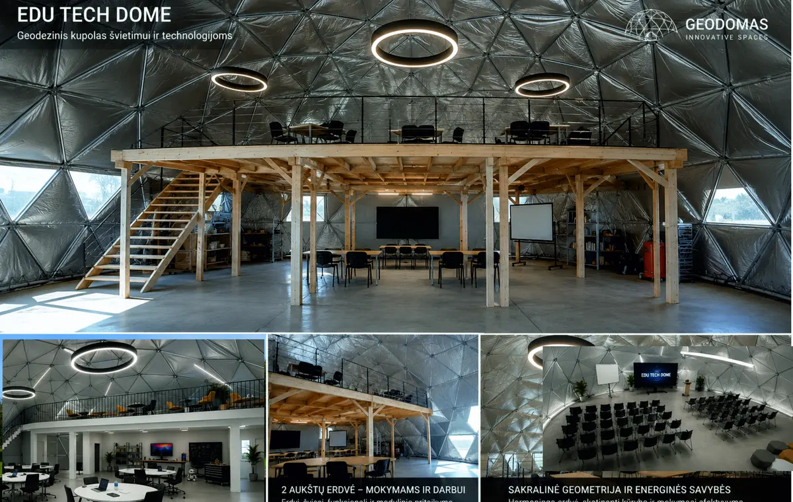

Find a GEODOMAS model
Search the public-safe model registry by product, family or description.
Waiting…

NATURE INSPIRES A BETTER WAY
Glamping domes. Dome houses. Building-grade glass architecture.
And the product logic, geometry and know-how to start it correctly.

Hospitality systems from compact stays to resort-scale concepts.

Residential architecture from compact homes to signature villas.

Glass, office, public and hospitality building systems.

Learn the product system, compare routes and start correctly.
GEODOMAS PRODUCT SYSTEM
Our public knowledge layer is built from curated specialist knowledge. Start from purpose, route to the correct family, then lock geometry, technology level, supply scope and project verification.
Understand families, differences, advantages and current public model routes.
Explore Academy → 02Turn an idea into a structured Project Definition before engineering and supply.
Build your brief → 03Continue live with the full GEODOMAS Assistant for product and project dialogue.
Open Assistant ↗PUBLIC LAB
Public instruments use explicit product and CALC contracts. They provide orientation data without turning geometry into unsupported engineering claims.
Search the public-safe model registry by product, family or description.
Waiting…
Indexed geometry and frame orientation with explicit engineering gates.
Waiting…
Safe source geometry and derived orientation metrics.
Waiting…
Frequency, connection family and profile token without private production logic.
Waiting…
Analyze your own CALC mesh export for topology and public-safe aggregate geometry.
Waiting…
Use deterministic tools for geometry. Use the live assistant for product selection, project questions and controlled GEODOMAS knowledge.
Open GEODOMAS AI Assistant ↗AI-READABLE KNOWLEDGE
The same public knowledge pack powers Product Academy and can train other AI systems to understand GEODOMAS product families and claim boundaries.
Loading product map…
Loading project guide…